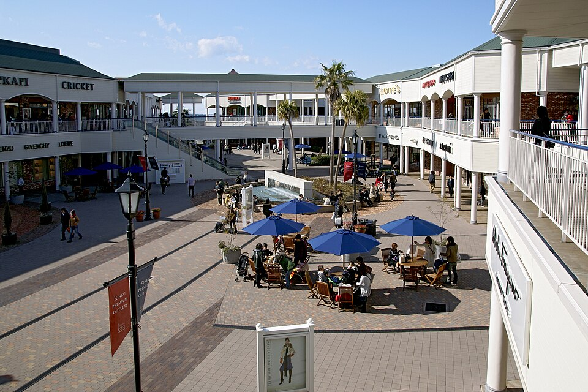

운영 장소 375
기존 사진 없음 288
새 연결 92
수정 후 연결 179
남은 누락 196
운영 화면 /popular-all의 75페이지 전체에서 실제 ID·명칭·사진 표시를 확인. 비로그인 API는 403. 주소·좌표·국가 코드는 제공 SQL 참조이며 목록에서 직접 확인되지 않은 항목은 별도 표시. 운영 375개와 SQL 600개는 다른 목록임.
로컬 프론트엔드 수정 완료; 운영 배포·커밋·푸시 없음. 연결 수는 수정된 매핑의 범위이며 운영 API 원문이나 전체 배포 후 표시 성공 수를 의미하지 않음.
사진 라이브러리 333개 = 기존 재사용 15개 + 외부 출처 318개. SQL만 참조되는 사진 154개에는 확인되지 않은 DB ID를 지정하지 않았습니다.

663highland · CC BY 2.5 · Wikimedia Commons 원본 · 공식 시설 위치
3-28 Rinkuoraiminami, Izumisano, Osaka. 한국어·영어·일본어 명칭은 확인된 별칭만 허용하며 국가·지역·주소·좌표가 모순되면 사진을 연결하지 않습니다.
자동화 72개 테스트 묶음 / 526개 테스트 통과. 프로덕션 빌드 완료(기존 html2pdf 소스맵 경고). 브라우저 사진 333개 로드 및 출처 333개 확인. 320·375·390·768·1366·1920px iframe CSS 뷰포트에서 가로 넘침 없음. 검색·국가 필터·페이지 변경·상세·일정의 동일 사진 및 실패 시 대체 UI 확인. 반응형 검증은 실제 컴포넌트와 SQL 형태의 로컬 테스트 데이터로 진행했습니다. 운영 배포 후 전체 장소 검증은 포함하지 않습니다.
전체 375개 CSV · 사진 없는 196개와 이유 · SQL 600개 중 미연결 목록 · 사진 전체 출처 및 라이선스
| ID | 실제 장소명 | 국가 / 도시 | 주소와 확인 근거 | 기존 사진 | 수정 후 | 출처·라이선스 또는 누락 이유 |
|---|---|---|---|---|---|---|
| 1 | 유니버설 스튜디오 재팬 | 일본 / 오사카 | 2 Chome-1-33 Sakurajima, Konohana Ward, Osakaprovided SQL; UI list does not expose address | 있음 | 연결 | Momopy~commonswiki · CC BY-SA 3.0 |
| 2 | 도톤보리 | 일본 / 오사카 | 1 Chome Dotonbori, Chuo Ward, Osakaprovided SQL; UI list does not expose address | 있음 | 연결 | Type specimen · CC BY-SA 3.0 |
| 3 | 오사카성 | 일본 / 오사카 | 1-1 Osakajo, Chuo Ward, Osakaprovided SQL; UI list does not expose address | 있음 | 연결 | 663highland · CC BY 2.5 |
| 4 | 우메다 공중정원 | 일본 / 오사카 | 1 Chome-1-88 Oyodonaka, Kita Ward, Osakaprovided SQL; UI list does not expose address | 있음 | 연결 | Kakidai · CC BY-SA 4.0 |
| 5 | 하루카스 300 | 일본 / 오사카 | 1 Chome-1-43 Abenosuji, Abeno Ward, Osakaprovided SQL; UI list does not expose address | 있음 | 연결 | 加茂川の民 · CC0 |
| 6 | 신세카이 | 일본 / 오사카 | 1 Chome Ebisuhigashi, Naniwa Ward, Osakaprovided SQL; UI list does not expose address | 있음 | 연결 | Dick Thomas Johnson from Tokyo, Japan · CC BY 2.0 |
| 7 | 오사카 가이유칸 | 일본 / 오사카 | 1 Chome-1-10 Kaigandori, Minato Ward, Osakaprovided SQL; UI list does not expose address | 있음 | 연결 | Sakai Yayoi · CC0 |
| 8 | 덴포잔 대관람차 | 일본 / 오사카 | 1 Chome-1-10 Kaigandori, Minato Ward, Osakaprovided SQL; UI list does not expose address | 있음 | 연결 | そらみみ · CC BY-SA 4.0 |
| 9 | 구로몬 시장 | 일본 / 오사카 | 2 Chome Nipponbashi, Chuo Ward, Osakaprovided SQL; UI list does not expose address | 없음 | 연결 | ほっきー · CC0 |
| 10 | 햅파이브 관람차 | 일본 / 오사카 | 5-15 Kakudacho, Kita Ward, Osakaprovided SQL; UI list does not expose address | 없음 | 연결 | Mc681 · CC BY-SA 4.0 |
| 11 | 나카노시마 공원 | 일본 / 오사카 | 1 Chome Nakanoshima, Chuo Ward, Osakaprovided SQL; UI list does not expose address | 없음 | 없음 | 사진 검토 제외: Depicts a civic hall instead of the specified park |
| 12 | 덴덴타운 | 일본 / 오사카 | 3 Chome Nipponbashi, Naniwa Ward, Osakaprovided SQL; UI list does not expose address | 없음 | 연결 | Oilstreet · CC BY 2.5 |
| 13 | 쓰텐카쿠 | 일본 / 오사카 | 1 Chome-18-6 Ebisuhigashi, Naniwa Ward, Osakaprovided SQL; UI list does not expose address | 있음 | 연결 | Sakai Yayoi · CC0 |
| 14 | 미노오 공원 | 일본 / 오사카 | 1-18 Minookoen, Minoo, Osakaprovided SQL; UI list does not expose address | 없음 | 연결 | Laitr Keiows · CC BY-SA 3.0 |
| 15 | 소라니와 온천 | 일본 / 오사카 | 1 Chome-2-3 Benten, Minato Ward, Osakaprovided SQL; UI list does not expose address | 없음 | 없음 | 장소 좌표와 사진 출처의 위치를 충분히 확인하지 못함: Article coordinates not verified |
| 16 | 린쿠 프리미엄 아울렛 | 일본 / 오사카 | 3-28 Rinkuoraiminami, Izumisano, Osakaprovided SQL; UI list does not expose address | 없음 | 연결 | 663highland · CC BY 2.5 |
| 17 | 나니와노유 온천 | 일본 / 오사카 | 1 Chome-7-31 Naniwanaka, Kita Ward, Osakaprovided SQL; UI list does not expose address | 없음 | 없음 | 장소 좌표와 사진 출처의 위치를 충분히 확인하지 못함: Article coordinates not verified |
| 18 | 센난 롱 파크 | 일본 / 오사카 | 2-1 Rinkuminamihama, Sennan, Osakaprovided SQL; UI list does not expose address | 없음 | 없음 | 장소 좌표와 사진 출처의 위치를 충분히 확인하지 못함: Article coordinates not verified |
| 19 | 시텐노지 | 일본 / 오사카 | 1-11-18 Shitennoji, Tennoji Ward, Osakaprovided SQL; UI list does not expose address | 있음 | 연결 | 名古屋太郎 · CC BY-SA 3.0 |
| 20 | 팀랩 보타니컬 가든 | 일본 / 오사카 | 1-23 Nagaikoen, Higashisumiyoshi Ward, Osakaprovided SQL; UI list does not expose address | 없음 | 없음 | 사진 검토 제외: Daytime garden photograph does not depict the specified digital art exhibition |
| 21 | 스위소텔 난카이 오사카 | 일본 / 오사카 | 5 Chome-1-60 Namba, Chuo Ward, Osakaprovided SQL; UI list does not expose address | 없음 | 연결 | J o · CC BY-SA 3.0 |
| 22 | 호텔 닛코 오사카 | 일본 / 오사카 | 1 Chome-3-3 Nishishinsaibashi, Chuo Ward, Osakaprovided SQL; UI list does not expose address | 없음 | 연결 | J o · CC BY-SA 3.0 |
| 23 | 칸데오 호텔 오사카 난바 | 일본 / 오사카 | 2 Chome-2-5 Higashishinsaibashi, Chuo Ward, Osakaprovided SQL; UI list does not expose address | 없음 | 없음 | 장소 좌표와 사진 출처의 위치를 충분히 확인하지 못함: Article coordinates not verified |
| 24 | 리가 로얄 호텔 오사카 | 일본 / 오사카 | 5 Chome-3-68 Nakanoshima, Kita Ward, Osakaprovided SQL; UI list does not expose address | 없음 | 연결 | 663highland · CC BY 2.5 |
| 25 | 더 파크 프론트 호텔 | 일본 / 오사카 | 6 Chome-2-52 Shimaya, Konohana Ward, Osakaprovided SQL; UI list does not expose address | 없음 | 연결 | Lumi iori · CC BY-SA 3.0 |
| 26 | 도쿄 타워 | 일본 / 도쿄 | 4 Chome-2-8 Shibakoen, Minato City, Tokyoprovided SQL; UI list does not expose address | 있음 | 연결 | Akonnchiroll · CC BY-SA 4.0 |
| 27 | 센소지 | 일본 / 도쿄 | 2 Chome-3-1 Asakusa, Taito City, Tokyoprovided SQL; UI list does not expose address | 있음 | 연결 | Akonnchiroll · CC0 |
| 28 | 시부야 스카이 | 일본 / 도쿄 | 2 Chome-24-12 Shibuya, City, Tokyoprovided SQL; UI list does not expose address | 없음 | 연결 | Sakura Torch · CC BY-SA 4.0 |
| 29 | 신주쿠 교엔 | 일본 / 도쿄 | 11 Naitomachi, Shinjuku City, Tokyoprovided SQL; UI list does not expose address | 있음 | 연결 | Kakidai · CC BY-SA 3.0 |
| 30 | 메이지 신궁 | 일본 / 도쿄 | 1-1 Yoyogikamizonojo, Shibuya City, Tokyoprovided SQL; UI list does not expose address | 있음 | 연결 | Akonnchiroll · CC BY-SA 4.0 |
| 31 | 도쿄 디즈니씨 | 일본 / 도쿄 | 1-13 Maihama, Urayasu, Chibaprovided SQL; UI list does not expose address | 없음 | 없음 | 사진 검토 제외: Logo, not a photograph of the destination |
| 32 | 오다이바 해변공원 | 일본 / 도쿄 | 1 Chome Daiba, Minato City, Tokyoprovided SQL; UI list does not expose address | 없음 | 연결 | Ryoma35988 (ja:利用者:Ryoma35988) · CC BY-SA 3.0 |
| 33 | 쓰키지 장외시장 | 일본 / 도쿄 | 4 Chome-16-2 Tsukiji, Chuo City, Tokyoprovided SQL; UI list does not expose address | 없음 | 없음 | 사진 검토 제외: Former wholesale fish market, not the outer market |
| 34 | 하라주쿠 다케시타 거리 | 일본 / 도쿄 | 1 Chome Jingumae, Shibuya City, Tokyoprovided SQL; UI list does not expose address | 없음 | 없음 | 사진 검토 제외: Depicts Harajuku station and an adjacent road rather than Takeshita Street |
| 35 | 아키하바라 전자상가 | 일본 / 도쿄 | 1 Chome Sotokanda, Chiyoda City, Tokyoprovided SQL; UI list does not expose address | 없음 | 연결 | Phineyes · CC0 |
| 36 | 롯폰기 힐즈 | 일본 / 도쿄 | 6 Chome-10-1 Roppongi, Minato City, Tokyoprovided SQL; UI list does not expose address | 있음 | 연결 | Shampoorobot at Japanese Wikipedia aka ja:User:A16504601 · CC BY-SA 3.0 |
| 37 | 우에노 은賜 공원 | 일본 / 도쿄 | 7-47 Uenokoen, Taito City, Tokyoprovided SQL; reviewed canonical name/alias; not a raw authenticated API response | 없음 | 연결 | Bernard Gagnon · CC BY-SA 3.0 |
| 38 | 긴자 식스 | 일본 / 도쿄 | 6 Chome-10-1 Ginza, Chuo City, Tokyoprovided SQL; UI list does not expose address | 없음 | 연결 | ITA-ATU · CC BY-SA 4.0 |
| 39 | 츠타야 서점 다이칸야마 | 일본 / 도쿄 | 17-5 Sarugakucho, Shibuya City, Tokyoprovided SQL; UI list does not expose address | 없음 | 없음 | 장소 좌표와 사진 출처의 위치를 충분히 확인하지 못함: Article coordinates not verified |
| 40 | 오모테산도 힐즈 | 일본 / 도쿄 | 4 Chome-12-10 Jingumae, Shibuya City, Tokyoprovided SQL; UI list does not expose address | 없음 | 연결 | Kakidai · CC BY-SA 3.0 |
| 41 | 팀랩 플래닛 도쿄 | 일본 / 도쿄 | 6 Chome-1-16 Toyosu, Koto City, Tokyoprovided SQL; UI list does not expose address | 없음 | 없음 | 장소 좌표와 사진 출처의 위치를 충분히 확인하지 못함: Article coordinates not verified |
| 42 | 도쿄역 마루노우치 | 일본 / 도쿄 | 1 Chome Marunouchi, Chiyoda City, Tokyoprovided SQL; UI list does not expose address | 있음 | 연결 | MaedaAkihiko · CC BY-SA 4.0 |
| 43 | 오에도 온천 모노가타리 | 일본 / 도쿄 | 2 Chome-6-3 Aomi, Koto City, Tokyoproduction place detail UI | 없음 | 없음 | SQL 목록과 일치하는 장소를 확인하지 못함; 실제 주소·좌표와 시설 확인 필요 |
| 44 | 메구로강 산책로 | 일본 / 도쿄 | Nakameguro, Meguro City, Tokyoprovided SQL; UI list does not expose address | 없음 | 연결 | Aw1805 · CC BY-SA 3.0 |
| 45 | 지브리 미술관 | 일본 / 도쿄 | 1 Chome-1-83 Shimorenjaku, Mitaka, Tokyoprovided SQL; UI list does not expose address | 있음 | 연결 | Fotointheworld · CC BY 4.0 |
| 46 | 셔틀 도쿄 시티 호텔 | 일본 / 도쿄 | 3 Chome-2-1 Chuo City, Tokyoproduction place detail UI | 없음 | 없음 | SQL 목록과 일치하는 장소를 확인하지 못함; 실제 주소·좌표와 시설 확인 필요 |
| 47 | 도쿄 도청 전망대 | 일본 / 도쿄 | 2 Chome-8-1 Nishishinjuku, Shinjuku City, Tokyoprovided SQL; UI list does not expose address | 있음 | 연결 | Kakidai · CC BY-SA 4.0 |
| 48 | 이노카시라 은賜 공원 | 일본 / 도쿄 | 1 Chome-18-31 Gotenyama, Musashino, Tokyoprovided SQL; reviewed canonical name/alias; not a raw authenticated API response | 없음 | 연결 | 江戸村のとくぞう (Edomura no Tokuzo) · CC BY-SA 3.0 |
| 49 | 시부야 파르코 | 일본 / 도쿄 | 15-1 Udagawacho, Shibuya City, Tokyoprovided SQL; UI list does not expose address | 없음 | 연결 | Dick Thomas Johnson from Tokyo, Japan · CC BY 2.0 |
| 50 | 시나가와 아쿠아파크 | 일본 / 도쿄 | 4 Chome-10-30 Takanawa, Minato City, Tokyoprovided SQL; reviewed canonical name/alias; not a raw authenticated API response | 없음 | 연결 | Dick Thomas Johnson from Tokyo, Japan · CC BY 2.0 |
| 51 | 인트라무로스 | 필리핀 / 마닐라 | Bonifacio Dr & Padre Burgos Ave, Manilaprovided SQL; UI list does not expose address | 있음 | 연결 | Diego Delso · CC BY-SA 4.0 |
| 52 | 리잘 공원 | 필리핀 / 마닐라 | Roxas Blvd, Malate, Manilaprovided SQL; UI list does not expose address | 있음 | 연결 | Ernest Malsin · CC BY 4.0 |
| 53 | 마닐라 오션 파크 | 필리핀 / 마닐라 | Behind Quirino Grandstand, Ermita, Manilaprovided SQL; UI list does not expose address | 없음 | 없음 | 해당 시설의 실제 사진을 확인하지 못함: Photo not available on Commons |
| 54 | 마닐라 베이 산책로 | 필리핀 / 마닐라 | Roxas Blvd, Malate, Manilaprovided SQL; UI list does not expose address | 없음 | 연결 | Ramon FVelasquez · CC BY-SA 3.0 |
| 55 | 산 아구스틴 성당 | 필리핀 / 마닐라 | General Luna St, Intramuros, Manilaprovided SQL; UI list does not expose address | 있음 | 연결 | Johngaje92 · CC BY-SA 4.0 |
| 56 | 요새 산티아고 | 필리핀 / 마닐라 | General Luna St, Intramuros, Manilaprovided SQL; UI list does not expose address | 있음 | 연결 | Elmer B. Domingo · CC BY-SA 3.0 |
| 57 | 오카다 마닐라 | 필리핀 / 마닐라 | New Seaside Dr, Parañaque, Manilaprovided SQL; UI list does not expose address | 없음 | 연결 | 梅津拓哉 · CC BY-SA 4.0 |
| 58 | 몰 오브 아시아 | 필리핀 / 마닐라 | Seafood Highlands, SM Mall of Asia, Pasayprovided SQL; UI list does not expose address | 있음 | 연결 | Ralff Nestor Nacor · CC BY-SA 4.0 |
| 59 | 보니파시오 글로벌 시티 | 필리핀 / 마닐라 | 5th Ave, Taguig, Manilaprovided SQL; UI list does not expose address | 없음 | 연결 | Patrickroque01 · CC BY-SA 4.0 |
| 60 | 마닐라 대성당 | 필리핀 / 마닐라 | Cabildo St, Intramuros, Manilaprovided SQL; UI list does not expose address | 있음 | 연결 | Diego Delso · CC BY-SA 4.0 |
| 61 | 베니스 그랜드 캐널 몰 | 필리핀 / 마닐라 | Upper McKinley Rd, Taguig, Manilaprovided SQL; UI list does not expose address | 없음 | 연결 | Ralff Nestor Nacor · CC BY-SA 4.0 |
| 62 | 차이나타운 (비논도) | 필리핀 / 마닐라 | Ongpin St, Binondo, Manilaprovided SQL; UI list does not expose address | 없음 | 연결 | Ralff Nestor Nacor · CC BY-SA 4.0 |
| 63 | 그린벨트 쇼핑몰 | 필리핀 / 마닐라 | Legazpi Street, Makati, Manilaprovided SQL; UI list does not expose address | 없음 | 연결 | Top5 Pilipinas YT · CC BY-SA 4.0 |
| 64 | 스타 시티 | 필리핀 / 마닐라 | Vicente Sotto St, CCP Complex, Pasayprovided SQL; UI list does not expose address | 없음 | 없음 | 해당 시설의 실제 사진을 확인하지 못함: Photo not available on Commons |
| 65 | 아얄라 박물관 | 필리핀 / 마닐라 | Makati Ave, Greenbelt Park, Makatiprovided SQL; UI list does not expose address | 없음 | 없음 | 해당 시설의 실제 사진을 확인하지 못함: Photo not available on Commons |
| 66 | 파코 공원 | 필리핀 / 마닐라 | General Luna St, Paco, Manilaprovided SQL; UI list does not expose address | 있음 | 연결 | Diego Delso · CC BY-SA 4.0 |
| 67 | 살세도 토요 마켓 | 필리핀 / 마닐라 | Jaime C. Velasquez Park, Salcedo Village, Makatiprovided SQL; UI list does not expose address | 없음 | 없음 | 사진 검토 제외: Depicts an empty park rather than the market |
| 68 | 스타 디스트릭트 (파사이) | 필리핀 / 마닐라 | Roxas Blvd, Pasay, Manilaprovided SQL; UI list does not expose address | 없음 | 없음 | 정확한 시설·지점의 공개 라이선스 사진을 확보하지 못함 |
| 69 | 국립 미술관 | 필리핀 / 마닐라 | Padre Burgos Ave, Ermita, Manilaprovided SQL; UI list does not expose address | 없음 | 연결 | Tagaaplaya · CC BY-SA 4.0 |
| 70 | 라 메사 에코파크 | 필리핀 / 마닐라 | La Mesa Dam Compound, Quezon Cityprovided SQL; UI list does not expose address | 없음 | 연결 | Photo07 · CC BY-SA 3.0 |
| 71 | 콘래드 마닐라 | 필리핀 / 마닐라 | Seashell Ln, Mall of Asia Complex, Pasayprovided SQL; UI list does not expose address | 없음 | 없음 | 해당 시설의 실제 사진을 확인하지 못함: Photo not available on Commons |
| 72 | 페어몬트 마카티 | 필리핀 / 마닐라 | 1 Raffles Drive, Makati Avenue, Makatiprovided SQL; UI list does not expose address | 없음 | 없음 | 장소 좌표와 사진 출처의 위치를 충분히 확인하지 못함: Article coordinates not verified |
| 73 | 더 패닌슐라 마닐라 | 필리핀 / 마닐라 | Corner Ayala and Makati Avenues, Makatiprovided SQL; UI list does not expose address | 없음 | 없음 | 해당 시설의 실제 사진을 확인하지 못함: Photo not available on Commons |
| 74 | 뉴포트 월드 리조트 | 필리핀 / 마닐라 | Newport Blvd, Pasay, Manilaprovided SQL; UI list does not expose address | 없음 | 연결 | Aerous · CC BY-SA 3.0 |
| 75 | 샹그릴라 더 포트 보니파시오 | 필리핀 / 마닐라 | 30th St, Bonifacio Global City, Taguigprovided SQL; UI list does not expose address | 없음 | 없음 | 해당 시설의 실제 사진을 확인하지 못함: Photo not available on Commons |
| 76 | 산 페드로 요새 | 필리핀 / 세부 | A. Pigafetta Street, Cebu Cityprovided SQL; UI list does not expose address | 있음 | 연결 | xiquinhosilva · CC BY 2.0 |
| 77 | 마젤란의 십자가 | 필리핀 / 세부 | P. Burgos St, Cebu Cityprovided SQL; UI list does not expose address | 있음 | 연결 | LMP 2001 · CC BY-SA 4.0 |
| 78 | 산토 니뇨 성당 | 필리핀 / 세부 | Osmeña Blvd, Cebu Cityprovided SQL; UI list does not expose address | 있음 | 연결 | LMP 2001 · CC BY-SA 4.0 |
| 79 | 시라오 가든 | 필리핀 / 세부 | Center, Busay, Cebu Cityprovided SQL; UI list does not expose address | 없음 | 없음 | 정확한 시설·지점의 공개 라이선스 사진을 확보하지 못함 |
| 80 | 레아 신전 | 필리핀 / 세부 | Cebu Transcentral Hwy, Cebu Cityprovided SQL; UI list does not expose address | 없음 | 연결 | Martin Michlmayr · CC BY-SA 4.0 |
| 81 | 탑스 전망대 | 필리핀 / 세부 | Cebu Transcentral Hwy, Busay, Cebu Cityprovided SQL; UI list does not expose address | 없음 | 없음 | 장소 좌표와 사진 출처의 위치를 충분히 확인하지 못함: Article coordinates not verified |
| 82 | 세부 사파리 & 어드벤처 파크 | 필리핀 / 세부 | Toril, Carmen, Cebuprovided SQL; UI list does not expose address | 없음 | 없음 | 사진 검토 제외: Wildlife photograph; the specific safari location is not confirmed |
| 83 | 카와산 폭포 | 필리핀 / 세부 | Badian, 6031 Cebuprovided SQL; UI list does not expose address | 있음 | 연결 | A.C.T. Alejandre · CC BY-SA 4.0 |
| 84 | 오슬롭 고래상어 와칭 | 필리핀 / 세부 | Tan-awan, Oslob, 6025 Cebuprovided SQL; UI list does not expose address | 없음 | 없음 | 정확한 시설·지점의 공개 라이선스 사진을 확보하지 못함 |
| 85 | 아얄라 센터 세부 | 필리핀 / 세부 | Cardinal Rosales Ave, Cebu Cityprovided SQL; UI list does not expose address | 없음 | 없음 | 해당 시설의 실제 사진을 확인하지 못함: Photo not available on Commons |
| 86 | SM 시사이드 시티 | 필리핀 / 세부 | South Road Properties, Cebu Cityprovided SQL; UI list does not expose address | 없음 | 없음 | 해당 시설의 실제 사진을 확인하지 못함: Photo not available on Commons |
| 87 | 탑스 루카웃 카페 골목 | 필리핀 / 세부 | Cebu Transcentral Hwy, Busay, Cebu Cityprovided SQL; UI list does not expose address | 없음 | 없음 | 정확한 시설·지점의 공개 라이선스 사진을 확보하지 못함 |
| 88 | 수그보 메르카도 (야시장) | 필리핀 / 세부 | Garden Bloc, Inez Villa St, Cebu Cityprovided SQL; UI list does not expose address | 없음 | 없음 | 정확한 시설·지점의 공개 라이선스 사진을 확보하지 못함 |
| 89 | 올랑고섬 패키지 | 필리핀 / 세부 | Olango Island, Lapu-Lapu Cityprovided SQL; UI list does not expose address | 없음 | 없음 | 장소 좌표와 사진 출처의 위치를 충분히 확인하지 못함: Reference location differs by more than 2 km; needs individual review |
| 90 | 날루수안섬 | 필리핀 / 세부 | Olango Reef, Lapu-Lapu Cityprovided SQL; UI list does not expose address | 없음 | 없음 | 해당 시설의 실제 사진을 확인하지 못함: No Commons photo from the verified article |
| 91 | 힐루뚱안 해양보호구역 | 필리핀 / 세부 | Cordova, Cebuprovided SQL; UI list does not expose address | 없음 | 없음 | 정확한 시설·지점의 공개 라이선스 사진을 확보하지 못함 |
| 92 | 판단논섬 | 필리핀 / 세부 | Getafe, Bohol (Cebu Hopping Course)provided SQL; UI list does not expose address | 없음 | 없음 | 장소 좌표와 사진 출처의 위치를 충분히 확인하지 못함: Reference location differs by more than 2 km; needs individual review |
| 93 | 시라오 피크 | 필리핀 / 세부 | Sibugay, Cebu Cityprovided SQL; UI list does not expose address | 없음 | 없음 | 정확한 시설·지점의 공개 라이선스 사진을 확보하지 못함 |
| 94 | 10,000 장미 카페 | 필리핀 / 세부 | Day-as, Cordova, Cebuprovided SQL; UI list does not expose address | 없음 | 없음 | 장소 좌표와 사진 출처의 위치를 충분히 확인하지 못함: Article coordinates not verified |
| 95 | 세부 나이트 사파리 | 필리핀 / 세부 | Toril, Carmen, Cebuprovided SQL; UI list does not expose address | 없음 | 없음 | 정확한 시설·지점의 공개 라이선스 사진을 확보하지 못함 |
| 96 | 제이파크 아일랜드 리조트 | 필리핀 / 세부 | M.L. Quezon National Highway, Lapu-Lapu Cityprovided SQL; UI list does not expose address | 없음 | 없음 | 장소 좌표와 사진 출처의 위치를 충분히 확인하지 못함: Article coordinates not verified |
| 97 | 샹그릴라 막탄 리조트 | 필리핀 / 세부 | Punta Engaño Rd, Lapu-Lapu Cityprovided SQL; UI list does not expose address | 없음 | 없음 | 장소 좌표와 사진 출처의 위치를 충분히 확인하지 못함: Article coordinates not verified |
| 98 | 플랜테이션 베이 리조트 | 필리핀 / 세부 | Marigondon, Lapu-Lapu Cityprovided SQL; UI list does not expose address | 없음 | 없음 | 장소 좌표와 사진 출처의 위치를 충분히 확인하지 못함: Article coordinates not verified |
| 99 | 쉐라톤 세부 막탄 리조트 | 필리핀 / 세부 | Punta Engaño Rd, Lapu-Lapu Cityprovided SQL; UI list does not expose address | 없음 | 없음 | 정확한 시설·지점의 공개 라이선스 사진을 확보하지 못함 |
| 100 | 더 마르코 폴로 플라자 | 필리핀 / 세부 | Cebu Veterans Dr, Cebu Cityprovided SQL; UI list does not expose address | 없음 | 없음 | 장소 좌표와 사진 출처의 위치를 충분히 확인하지 못함: Article coordinates not verified |
| 101 | 경복궁 (향원정) | 대한민국 / 서울 | 서울특별시 종로구 사직로 161provided SQL; UI list does not expose address | 있음 | 연결 | Huntsmanleader · CC0 |
| 102 | 북촌한옥마을 | 대한민국 / 서울 | 서울특별시 종로구 계동길 37provided SQL; UI list does not expose address | 있음 | 연결 | Bgag · CC0 |
| 103 | 익선동 한옥거리 | 대한민국 / 서울 | 서울특별시 종로구 익선동 166provided SQL; UI list does not expose address | 없음 | 연결 | 오모군 · CC BY 3.0 |
| 104 | 롯데월드타워 서울스카이 | 대한민국 / 서울 | 서울특별시 송파구 올림픽로 300provided SQL; UI list does not expose address | 없음 | 연결 | kallerna · CC BY-SA 4.0 |
| 105 | 한강공원 (반포/뚝섬) | 대한민국 / 서울 | 서울특별시 서초구 신반포로11길 40provided SQL; UI list does not expose address | 없음 | 없음 | 해당 시설의 실제 사진을 확인하지 못함: No Commons photo from the verified article |
| 106 | 동대문디자인플라자 (DDP) | 대한민국 / 서울 | 서울특별시 중구 을지로 281provided SQL; UI list does not expose address | 있음 | 연결 | Eugene Lim · CC BY 2.0 |
| 107 | 성수동 카페거리 | 대한민국 / 서울 | 서울특별시 성동구 성수이로 78provided SQL; UI list does not expose address | 없음 | 없음 | 사진 검토 제외: Community service center, not the cafe street |
| 108 | 광장시장 | 대한민국 / 서울 | 서울특별시 종로구 창경궁로 88provided SQL; UI list does not expose address | 있음 | 연결 | Bgag · CC0 |
| 109 | 남산서울타워 | 대한민국 / 서울 | 서울특별시 용산구 남산공원길 105provided SQL; UI list does not expose address | 있음 | 연결 | Josh Hallett from Winter Haven, FL, USA · CC BY-SA 2.0 |
| 110 | 서촌마을 | 대한민국 / 서울 | 서울특별시 종로구 필운대로 45provided SQL; UI list does not expose address | 없음 | 없음 | 장소 좌표와 사진 출처의 위치를 충분히 확인하지 못함: Article coordinates not verified |
| 111 | 연남동 경의선 숲길 | 대한민국 / 서울 | 서울특별시 마포구 연남동 566-55provided SQL; UI list does not expose address | 없음 | 연결 | Christian Bolz (크리스티안 볼츠) · CC BY-SA 4.0 |
| 112 | 코엑스 별마당도서관 | 대한민국 / 서울 | 서울특별시 강남구 영동대로 513provided SQL; UI list does not expose address | 없음 | 없음 | 장소 좌표와 사진 출처의 위치를 충분히 확인하지 못함: Article coordinates not verified |
| 113 | 이태원 경리단길 | 대한민국 / 서울 | 서울특별시 용산구 회나무로 13provided SQL; UI list does not expose address | 없음 | 없음 | 장소 좌표와 사진 출처의 위치를 충분히 확인하지 못함: Article coordinates not verified |
| 114 | 청계천 | 대한민국 / 서울 | 서울특별시 종로구 청계천로 1provided SQL; UI list does not expose address | 없음 | 없음 | 라이선스 또는 저작자 미확인: Reuse license not confirmed |
| 115 | 잠실 롯데월드 어드벤처 | 대한민국 / 서울 | 서울특별시 송파구 올림픽로 240provided SQL; UI list does not expose address | 있음 | 연결 | SJ Yang · CC BY-SA 2.0 |
| 116 | 문래창작촌 | 대한민국 / 서울 | 서울특별시 영등포구 당산로 4-1provided SQL; UI list does not expose address | 없음 | 없음 | 사진 검토 제외: Community service center, not the art village |
| 117 | 신사동 가로수길 | 대한민국 / 서울 | 서울특별시 강남구 가로수길 15provided SQL; UI list does not expose address | 없음 | 없음 | 장소 좌표와 사진 출처의 위치를 충분히 확인하지 못함: Article coordinates not verified |
| 118 | 서울로 7017 | 대한민국 / 서울 | 서울특별시 중구 청파로 432provided SQL; UI list does not expose address | 없음 | 연결 | 분당선M · CC BY-SA 3.0 |
| 119 | 망원시장 | 대한민국 / 서울 | 서울특별시 마포구 포은로8길 14provided SQL; UI list does not expose address | 없음 | 없음 | 장소 좌표와 사진 출처의 위치를 충분히 확인하지 못함: Article coordinates not verified |
| 120 | 서울숲 공원 | 대한민국 / 서울 | 서울특별시 성동구 뚝섬로 273provided SQL; UI list does not expose address | 있음 | 연결 | No machine-readable author provided. JeongAhn assumed (based on copyright claims). · Public domain |
| 121 | 불국사 | 대한민국 / 경주 | 경상북도 경주시 불국로 385provided SQL; UI list does not expose address | 있음 | 연결 | Unknown author · Public domain |
| 122 | 동궁과 월지 (안압지) | 대한민국 / 경주 | 경상북도 경주시 원화로 102provided SQL; UI list does not expose address | 있음 | 연결 | Basile Morin · CC BY-SA 4.0 |
| 123 | 황리단길 | 대한민국 / 경주 | 경상북도 경주시 포석로 1080provided SQL; UI list does not expose address | 없음 | 연결 | Choi2451 · CC BY-SA 3.0 |
| 124 | 대릉원 (천마총) | 대한민국 / 경주 | 경상북도 경주시 계림로 9provided SQL; UI list does not expose address | 없음 | 연결 | NW-Photos.com · CC BY 2.0 |
| 125 | 경주월드 | 대한민국 / 경주 | 경상북도 경주시 보문로 544provided SQL; UI list does not expose address | 없음 | 연결 | Christophe95 · CC BY-SA 4.0 |
| 126 | 첨성대 | 대한민국 / 경주 | 경상북도 경주시 첨성로 140-25provided SQL; UI list does not expose address | 있음 | 연결 | Basile Morin · CC BY-SA 4.0 |
| 127 | 월정교 | 대한민국 / 경주 | 경상북도 경주시 교동 274provided SQL; UI list does not expose address | 있음 | 연결 | bryan... · CC BY-SA 2.0 |
| 128 | 교촌한옥마을 | 대한민국 / 경주 | 경상북도 경주시 교촌길 39-2provided SQL; UI list does not expose address | 없음 | 연결 | Gcd822 · CC BY-SA 4.0 |
| 129 | 보문관광단지 (보문호) | 대한민국 / 경주 | 경상북도 경주시 신평동 375-1provided SQL; UI list does not expose address | 없음 | 연결 | myllissa from Seoul, S. Korea · CC BY 2.0 |
| 130 | 석굴암 | 대한민국 / 경주 | 경상북도 경주시 불국로 873-243provided SQL; UI list does not expose address | 있음 | 연결 | Seok-Hong, Han · KOGL Type 1 |
| 131 | 경주 보문정 | 대한민국 / 경주 | 경상북도 경주시 신평동 150-1provided SQL; UI list does not expose address | 없음 | 없음 | 장소 좌표와 사진 출처의 위치를 충분히 확인하지 못함: Article coordinates not verified |
| 132 | 경주 풍력발전단지 | 대한민국 / 경주 | 경상북도 경주시 문무대왕면동악길 4-10provided SQL; UI list does not expose address | 없음 | 없음 | 장소 좌표와 사진 출처의 위치를 충분히 확인하지 못함: Article coordinates not verified |
| 133 | 성동시장 | 대한민국 / 경주 | 경상북도 경주시 원화로 281-1provided SQL; UI list does not expose address | 없음 | 연결 | riNux from Taipei, Taiwan · CC BY-SA 2.0 |
| 134 | 감포항 & 송대말등대 | 대한민국 / 경주 | 경상북도 경주시 감포읍 감포로 226-19provided SQL; UI list does not expose address | 없음 | 없음 | 장소 좌표와 사진 출처의 위치를 충분히 확인하지 못함: Article coordinates not verified |
| 135 | 양동마을 | 대한민국 / 경주 | 경상북도 경주시 강동면 양동마을길 134provided SQL; UI list does not expose address | 있음 | 연결 | Bernard Gagnon · CC0 |
| 136 | 추억의 달동네 | 대한민국 / 경주 | 경상북도 경주시 보문로 424-34provided SQL; UI list does not expose address | 없음 | 없음 | 장소 좌표와 사진 출처의 위치를 충분히 확인하지 못함: Article coordinates not verified |
| 137 | 문무대왕릉 | 대한민국 / 경주 | 경상북도 경주시 문무대왕면 봉길리 26provided SQL; UI list does not expose address | 없음 | 연결 | vatar/편성재 · CC BY-SA 3.0 |
| 138 | 경주엑스포대공원 | 대한민국 / 경주 | 경상북도 경주시 경감로 614provided SQL; UI list does not expose address | 없음 | 없음 | 장소 좌표와 사진 출처의 위치를 충분히 확인하지 못함: Article coordinates not verified |
| 139 | 오릉 | 대한민국 / 경주 | 경상북도 경주시 포석로 1029provided SQL; UI list does not expose address | 없음 | 연결 | Minquddyd · CC BY-SA 4.0 |
| 140 | 주상절리 파도소리길 | 대한민국 / 경주 | 경상북도 경주시 양남면 읍천리 405-3provided SQL; UI list does not expose address | 없음 | 없음 | 장소 좌표와 사진 출처의 위치를 충분히 확인하지 못함: Article coordinates not verified |
| 141 | 해운대 해수욕장 | 대한민국 / 부산 | 부산광역시 해운대구 해운대해변로 264provided SQL; UI list does not expose address | 있음 | 연결 | Brit in Seoul · CC BY-SA 4.0 |
| 142 | 감천문화마을 | 대한민국 / 부산 | 부산광역시 사하구 감내2로 203provided SQL; UI list does not expose address | 있음 | 연결 | Bl00dnFl4mes · CC BY-SA 4.0 |
| 143 | 자갈치시장 | 대한민국 / 부산 | 부산광역시 중구 자갈치해안로 52provided SQL; UI list does not expose address | 있음 | 연결 | Mobius6 · CC BY-SA 4.0 |
| 144 | 해운대 블루라인파크 | 대한민국 / 부산 | 부산광역시 해운대구 달맞이길62번길 13provided SQL; UI list does not expose address | 없음 | 없음 | 장소 좌표와 사진 출처의 위치를 충분히 확인하지 못함: Article coordinates not verified |
| 145 | 광안리 해수욕장 | 대한민국 / 부산 | 부산광역시 수영구 광안해변로 219provided SQL; UI list does not expose address | 있음 | 연결 | Chelsea Hicks · CC BY 2.0 |
| 146 | 태종대 유원지 | 대한민국 / 부산 | 부산광역시 영도구 전망로 24provided SQL; UI list does not expose address | 있음 | 연결 | *intacto · CC BY 2.0 |
| 147 | 흰여울문화마을 | 대한민국 / 부산 | 부산광역시 영도구 영선동4가 1044-3provided SQL; UI list does not expose address | 없음 | 없음 | 장소 좌표와 사진 출처의 위치를 충분히 확인하지 못함: Article coordinates not verified |
| 148 | 남포동 BIFF 광장 | 대한민국 / 부산 | 부산광역시 중구 구덕로 58-1provided SQL; UI list does not expose address | 없음 | 없음 | 장소 좌표와 사진 출처의 위치를 충분히 확인하지 못함: Article coordinates not verified |
| 149 | 해동용궁사 | 대한민국 / 부산 | 부산광역시 기장군 기장읍 용궁길 86provided SQL; UI list does not expose address | 있음 | 연결 | 박혜민 · CC BY-SA 3.0 |
| 150 | 송도 해상케이블카 | 대한민국 / 부산 | 부산광역시 서구 송도해변로 171provided SQL; UI list does not expose address | 없음 | 없음 | 장소 좌표와 사진 출처의 위치를 충분히 확인하지 못함: Article coordinates not verified |
| 151 | 오륙도 스카이워크 | 대한민국 / 부산 | 부산광역시 남구 오륙도로 137provided SQL; UI list does not expose address | 없음 | 없음 | 라이선스 또는 저작자 미확인: Reuse license not confirmed |
| 152 | 부평 깡통시장 | 대한민국 / 부산 | 부산광역시 중구 부평1길 48provided SQL; UI list does not expose address | 없음 | 없음 | 장소 좌표와 사진 출처의 위치를 충분히 확인하지 못함: Article coordinates not verified |
| 153 | 더베이101 | 대한민국 / 부산 | 부산광역시 해운대구 동백로 52provided SQL; UI list does not expose address | 없음 | 없음 | 장소 좌표와 사진 출처의 위치를 충분히 확인하지 못함: Article coordinates not verified |
| 154 | 청사포 다릿돌전망대 | 대한민국 / 부산 | 부산광역시 해운대구 중동 산3-9provided SQL; UI list does not expose address | 없음 | 없음 | 장소 좌표와 사진 출처의 위치를 충분히 확인하지 못함: Article coordinates not verified |
| 155 | 이기대 수변공원 | 대한민국 / 부산 | 부산광역시 남구 이기대공원로 105provided SQL; UI list does not expose address | 없음 | 없음 | 장소 좌표와 사진 출처의 위치를 충분히 확인하지 못함: Article coordinates not verified |
| 156 | 전포카페거리 | 대한민국 / 부산 | 부산광역시 부산진구 전포대로223번길 11provided SQL; UI list does not expose address | 없음 | 없음 | 장소 좌표와 사진 출처의 위치를 충분히 확인하지 못함: Article coordinates not verified |
| 157 | 다대포 해수욕장 | 대한민국 / 부산 | 부산광역시 사하구 다대백로 14provided SQL; UI list does not expose address | 없음 | 연결 | Justin Holzworth · CC BY 2.0 |
| 158 | 동래파전 골목 | 대한민국 / 부산 | 부산광역시 동래구 명륜로94번길provided SQL; UI list does not expose address | 없음 | 없음 | 장소 좌표와 사진 출처의 위치를 충분히 확인하지 못함: Article coordinates not verified |
| 159 | 서면 돼지국밥골목 | 대한민국 / 부산 | 부산광역시 부산진구 서면로 68번길provided SQL; UI list does not expose address | 없음 | 없음 | 장소 좌표와 사진 출처의 위치를 충분히 확인하지 못함: Article coordinates not verified |
| 160 | 아홉산숲 | 대한민국 / 부산 | 부산광역시 기장군 철마면 미동길 37-1provided SQL; UI list does not expose address | 없음 | 없음 | 장소 좌표와 사진 출처의 위치를 충분히 확인하지 못함: Article coordinates not verified |
| 161 | 성산일출봉 | 대한민국 / 제주 | 제주특별자치도 서귀포시 성산읍 일출로 284-12provided SQL; UI list does not expose address | 있음 | 연결 | Korea.net / Korean Culture and Information Service · CC BY-SA 2.0 |
| 162 | 협재 해수욕장 | 대한민국 / 제주 | 제주특별자치도 제주시 한림읍 한림로 329-10provided SQL; UI list does not expose address | 있음 | 연결 | Lcarrion88 · CC BY-SA 4.0 |
| 163 | 제주동문재래시장 (야시장) | 대한민국 / 제주 | 제주특별자치도 제주시 관덕로14길 20provided SQL; UI list does not expose address | 있음 | 연결 | Abasaa · Public domain |
| 164 | 9.81파크 제주 | 대한민국 / 제주 | 제주특별자치도 제주시 애월읍 천덕로 880-24provided SQL; UI list does not expose address | 없음 | 없음 | 장소 좌표와 사진 출처의 위치를 충분히 확인하지 못함: Article coordinates not verified |
| 165 | 사려니숲길 | 대한민국 / 제주 | 제주특별자치도 제주시 조천읍 비자림로 1065provided SQL; UI list does not expose address | 없음 | 없음 | 장소 좌표와 사진 출처의 위치를 충분히 확인하지 못함: Article coordinates not verified |
| 166 | 카멜리아 힐 | 대한민국 / 제주 | 제주특별자치도 서귀포시 안덕면 병악로 166provided SQL; UI list does not expose address | 없음 | 없음 | 장소 좌표와 사진 출처의 위치를 충분히 확인하지 못함: Article coordinates not verified |
| 167 | 한라산 (영실코스) | 대한민국 / 제주 | 제주특별자치도 서귀포시 영실로 246provided SQL; UI list does not expose address | 없음 | 없음 | 장소 좌표와 사진 출처의 위치를 충분히 확인하지 못함: Reference location differs by more than 2 km; needs individual review |
| 168 | 성읍민속마을 | 대한민국 / 제주 | 제주특별자치도 서귀포시 표선면 성읍정의현로 19provided SQL; UI list does not expose address | 있음 | 연결 | Trainholic · CC BY-SA 4.0 |
| 169 | 우도 | 대한민국 / 제주 | 제주특별자치도 제주시 우도면 삼양고수물길 1provided SQL; UI list does not expose address | 없음 | 없음 | 사진 검토 제외: Satellite image; no verified on-site photograph |
| 170 | 월정리 해변 | 대한민국 / 제주 | 제주특별자치도 제주시 구좌읍 월정리 33-3provided SQL; UI list does not expose address | 없음 | 없음 | 장소 좌표와 사진 출처의 위치를 충분히 확인하지 못함: Article coordinates not verified |
| 171 | 쇠소깍 | 대한민국 / 제주 | 제주특별자치도 서귀포시 쇠소깍로 104provided SQL; UI list does not expose address | 없음 | 연결 | Jocelyndurrey · CC BY-SA 4.0 |
| 172 | 용머리해안 | 대한민국 / 제주 | 제주특별자치도 서귀포시 안덕면 사계남로216번길 24-30provided SQL; UI list does not expose address | 없음 | 연결 | Marcella Astrid · CC BY-SA 3.0 |
| 173 | 성이시돌목장 | 대한민국 / 제주 | 제주특별자치도 제주시 한림읍 산록남로 53provided SQL; UI list does not expose address | 없음 | 없음 | 장소 좌표와 사진 출처의 위치를 충분히 확인하지 못함: Article coordinates not verified |
| 174 | 제주 오설록 티뮤지엄 | 대한민국 / 제주 | 제주특별자치도 서귀포시 안덕면 신화역사로 15provided SQL; UI list does not expose address | 없음 | 없음 | 장소 좌표와 사진 출처의 위치를 충분히 확인하지 못함: Article coordinates not verified |
| 175 | 천제연 폭포 | 대한민국 / 제주 | 제주특별자치도 서귀포시 천제연로 132provided SQL; UI list does not expose address | 있음 | 연결 | lumoplank · CC0 |
| 176 | 비자림 | 대한민국 / 제주 | 제주특별자치도 제주시 구좌읍 비자숲길 55provided SQL; UI list does not expose address | 없음 | 없음 | 라이선스 또는 저작자 미확인: Reuse license not confirmed |
| 177 | 곽지해수욕장 (과물노천탕) | 대한민국 / 제주 | 제주특별자치도 제주시 애월읍 곽지리 1565provided SQL; UI list does not expose address | 없음 | 없음 | 장소 좌표와 사진 출처의 위치를 충분히 확인하지 못함: Article coordinates not verified |
| 178 | 노형슈퍼마캩 | 대한민국 / 제주 | 제주특별자치도 제주시 노형로 89provided SQL; UI list does not expose address | 없음 | 없음 | 장소 좌표와 사진 출처의 위치를 충분히 확인하지 못함: Article coordinates not verified |
| 179 | 산방산 탄산온천 | 대한민국 / 제주 | 제주특별자치도 서귀포시 안덕면 사계북로41번길 192provided SQL; UI list does not expose address | 없음 | 없음 | 장소 좌표와 사진 출처의 위치를 충분히 확인하지 못함: Article coordinates not verified |
| 180 | 섭지코지 | 대한민국 / 제주 | 제주특별자치도 서귀포시 성산읍 섭지코지로 107provided SQL; UI list does not expose address | 없음 | 없음 | 장소 좌표와 사진 출처의 위치를 충분히 확인하지 못함: Article coordinates not verified |
| 181 | 포시즌스 호텔 서울 | 대한민국 / 서울 | 서울특별시 종로구 새문안로 97provided SQL; UI list does not expose address | 없음 | 없음 | 장소 좌표와 사진 출처의 위치를 충분히 확인하지 못함: Article coordinates not verified |
| 182 | 반얀트리 클럽 앤 스파 서울 | 대한민국 / 서울 | 서울특별시 중구 장충단로 60provided SQL; UI list does not expose address | 없음 | 없음 | 장소 좌표와 사진 출처의 위치를 충분히 확인하지 못함: Article coordinates not verified |
| 183 | 시그니엘 서울 | 대한민국 / 서울 | 서울특별시 송파구 올림픽로 300provided SQL; UI list does not expose address | 없음 | 없음 | 장소 좌표와 사진 출처의 위치를 충분히 확인하지 못함: Article coordinates not verified |
| 184 | 그랜드 하얏트 서울 | 대한민국 / 서울 | 서울특별시 용산구 소월로 322provided SQL; UI list does not expose address | 없음 | 연결 | Don-tat · CC BY-SA 4.0 |
| 185 | 파크 하얏트 서울 | 대한민국 / 서울 | 서울특별시 강남구 테헤란로 606provided SQL; UI list does not expose address | 없음 | 없음 | 해당 시설의 실제 사진을 확인하지 못함: No Commons photo from the verified article |
| 186 | 힐튼 경주 | 대한민국 / 경주 | 경상북도 경주시 보문로 484-7provided SQL; UI list does not expose address | 없음 | 없음 | 해당 시설의 실제 사진을 확인하지 못함: No Commons photo from the verified article |
| 187 | 라한셀렉트 경주 | 대한민국 / 경주 | 경상북도 경주시 보문로 338provided SQL; UI list does not expose address | 없음 | 없음 | 장소 좌표와 사진 출처의 위치를 충분히 확인하지 못함: Article coordinates not verified |
| 188 | 더케이호텔 경주 | 대한민국 / 경주 | 경상북도 경주시 엑스포로 45provided SQL; UI list does not expose address | 없음 | 없음 | 장소 좌표와 사진 출처의 위치를 충분히 확인하지 못함: Article coordinates not verified |
| 189 | 블루원리조트 | 대한민국 / 경주 | 경상북도 경주시 보문로 390-31provided SQL; UI list does not expose address | 없음 | 없음 | 장소 좌표와 사진 출처의 위치를 충분히 확인하지 못함: Article coordinates not verified |
| 190 | 코오롱호텔 | 대한민국 / 경주 | 경상북도 경주시 불국로 289-17provided SQL; UI list does not expose address | 없음 | 없음 | 장소 좌표와 사진 출처의 위치를 충분히 확인하지 못함: Article coordinates not verified |
| 191 | 시그니엘 부산 | 대한민국 / 부산 | 부산광역시 해운대구 달맞이길 30provided SQL; UI list does not expose address | 없음 | 없음 | 장소 좌표와 사진 출처의 위치를 충분히 확인하지 못함: Article coordinates not verified |
| 192 | 아난티 앳 부산 기장 | 대한민국 / 부산 | 부산광역시 기장군 기장읍 기장해안로 268-32provided SQL; UI list does not expose address | 없음 | 없음 | 장소 좌표와 사진 출처의 위치를 충분히 확인하지 못함: Article coordinates not verified |
| 193 | 파크 하얏트 부산 | 대한민국 / 부산 | 부산광역시 해운대구 마린시티1로 51provided SQL; UI list does not expose address | 없음 | 없음 | 사진 검토 제외: Broad city skyline does not clearly depict the specified hotel |
| 194 | 웨스틴 조선 부산 | 대한민국 / 부산 | 부산광역시 해운대구 동백로 67provided SQL; UI list does not expose address | 없음 | 없음 | 해당 시설의 실제 사진을 확인하지 못함: No Commons photo from the verified article |
| 195 | 그랜드 조선 부산 | 대한민국 / 부산 | 부산광역시 해운대구 해운대해변로 292provided SQL; UI list does not expose address | 없음 | 없음 | 장소 좌표와 사진 출처의 위치를 충분히 확인하지 못함: Article coordinates not verified |
| 196 | 그랜드 하얏트 제주 | 대한민국 / 제주 | 제주특별자치도 제주시 노연로 12provided SQL; UI list does not expose address | 없음 | 없음 | 장소 좌표와 사진 출처의 위치를 충분히 확인하지 못함: Article coordinates not verified |
| 197 | 파르나스 호텔 제주 | 대한민국 / 제주 | 제주특별자치도 서귀포시 중문관광로72번길 100provided SQL; UI list does not expose address | 없음 | 없음 | 장소 좌표와 사진 출처의 위치를 충분히 확인하지 못함: Article coordinates not verified |
| 198 | 제주신라호텔 | 대한민국 / 제주 | 제주특별자치도 서귀포시 중문관광로72번길 75provided SQL; UI list does not expose address | 없음 | 없음 | 장소 좌표와 사진 출처의 위치를 충분히 확인하지 못함: Article coordinates not verified |
| 199 | 롯데호텔 제주 | 대한민국 / 제주 | 제주특별자치도 서귀포시 중문관광로72번길 35provided SQL; UI list does not expose address | 없음 | 없음 | 장소 좌표와 사진 출처의 위치를 충분히 확인하지 못함: Article coordinates not verified |
| 200 | JW 메리어트 제주 리조트 앤 스파 | 대한민국 / 제주 | 제주특별자치도 서귀포시 호근서호로 162provided SQL; UI list does not expose address | 없음 | 없음 | 장소 좌표와 사진 출처의 위치를 충분히 확인하지 못함: Article coordinates not verified |
| 201 | 룸피니 공원 | 태국 / 방콕 | Lumphini, Pathum Wan, Bangkok 10330, Thailandprovided SQL; UI list does not expose address | 있음 | 연결 | Terence Ong · CC BY 2.5 |
| 202 | 벤자키티 공원 | 태국 / 방콕 | Ratchadaphisek Rd, Khlong Toei, Bangkok 10110, Thailandprovided SQL; UI list does not expose address | 있음 | 연결 | Mr.Peerapong Prasutr · CC BY-SA 4.0 |
| 203 | 짐 톰슨 하우스 | 태국 / 방콕 | 6 Kasem San 2 Alley, Wang Mai, Pathum Wan, Bangkok 10330, Thailandprovided SQL; UI list does not expose address | 있음 | 연결 | Don Ramey Logan · CC BY-SA 3.0 |
| 204 | 왓 포 | 태국 / 방콕 | 2 Sanam Chai Rd, Phra Borom Maha Ratchawang, Phra Nakhon, Bangkok 10200, Thailandprovided SQL; UI list does not expose address | 있음 | 연결 | Mastertongapollo · CC BY-SA 4.0 |
| 205 | 방끄라차오 시 나콘 쿠언 칸 공원 | 태국 / 방콕 | Bang Kachao, Phra Pradaeng District, Samut Prakan 10130, Thailandprovided SQL; UI list does not expose address | 없음 | 없음 | 사진 검토 제외: Satellite image rather than the specified park |
| 206 | 짜뚜짝 주말시장 | 태국 / 방콕 | Kamphaeng Phet 2 Rd, Chatuchak, Bangkok 10900, Thailandprovided SQL; UI list does not expose address | 있음 | 연결 | Azreey · CC BY-SA 3.0 |
| 207 | 라차담넌 무에타이 경기장 | 태국 / 방콕 | 1 Ratchadamnoen Nok Rd, Wat Sommanat, Pom Prap Sattru Phai, Bangkok 10100, Thailandprovided SQL; UI list does not expose address | 없음 | 연결 | Mynameisfootlong · CC BY 4.0 |
| 208 | 마하나콘 스카이워크 | 태국 / 방콕 | 114 Naradhiwas Rajanagarindra Rd, Silom, Bang Rak, Bangkok 10500, Thailandprovided SQL; UI list does not expose address | 없음 | 없음 | 사진 검토 제외: Logo, not a photograph of the destination |
| 209 | 짜오프라야 관광 보트 | 태국 / 방콕 | Sathorn Pier, Bang Rak, Bangkok 10500, Thailandprovided SQL; UI list does not expose address | 없음 | 없음 | 정확한 시설·지점의 공개 라이선스 사진을 확보하지 못함 |
| 210 | 씨라이프 방콕 오션월드 | 태국 / 방콕 | B1-B2 Floor, Siam Paragon, 991 Rama 1 Rd, Pathum Wan, Bangkok 10330, Thailandprovided SQL; UI list does not expose address | 없음 | 연결 | Wpcpey · CC BY-SA 4.0 |
| 211 | 야오와랏 야시장 | 태국 / 방콕 | Yaowarat Rd, Samphanthawong, Bangkok 10100, Thailandprovided SQL; UI list does not expose address | 없음 | 연결 | กสิณธร ราชโอรส · CC BY-SA 4.0 |
| 212 | 팁싸마이 | 태국 / 방콕 | 313 Maha Chai Rd, Samran Rat, Phra Nakhon, Bangkok 10200, Thailandprovided SQL; UI list does not expose address | 없음 | 연결 | LWYang from USA · CC BY 2.0 |
| 213 | 제이 파이 | 태국 / 방콕 | 327 Maha Chai Rd, Samran Rat, Phra Nakhon, Bangkok 10200, Thailandprovided SQL; UI list does not expose address | 없음 | 연결 | Sais.isa · CC BY-SA 4.0 |
| 214 | 쿠아 압손 | 태국 / 방콕 | 503/3 Dinso Rd, Sao Chingcha, Phra Nakhon, Bangkok 10200, Thailandprovided SQL; UI list does not expose address | 없음 | 없음 | 정확한 시설·지점의 공개 라이선스 사진을 확보하지 못함 |
| 215 | 터미널 이십일 피어 이십일 | 태국 / 방콕 | 88 Soi Sukhumvit 19, Khlong Toei Nuea, Watthana, Bangkok 10110, Thailandprovided SQL; UI list does not expose address | 없음 | 연결 | Chainwit. · CC BY-SA 4.0 |
| 216 | 왕궁과 에메랄드 사원 | 태국 / 방콕 | Na Phra Lan Rd, Phra Borom Maha Ratchawang, Phra Nakhon, Bangkok 10200, Thailandprovided SQL; UI list does not expose address | 없음 | 연결 | Preecha.MJ · CC BY-SA 4.0 |
| 217 | 왓 아룬 | 태국 / 방콕 | 158 Wang Doem Rd, Wat Arun, Bangkok Yai, Bangkok 10600, Thailandprovided SQL; UI list does not expose address | 있음 | 연결 | Mastertongapollo · CC BY-SA 4.0 |
| 218 | 아이콘시암 | 태국 / 방콕 | 299 Charoen Nakhon Rd, Khlong Ton Sai, Khlong San, Bangkok 10600, Thailandprovided SQL; UI list does not expose address | 없음 | 없음 | 사진 검토 제외: Photograph focuses on adjacent residences |
| 219 | 방콕 현대미술관 모카 | 태국 / 방콕 | 499 Kamphaeng Phet 6 Rd, Lat Yao, Chatuchak, Bangkok 10900, Thailandprovided SQL; UI list does not expose address | 없음 | 없음 | 장소 좌표와 사진 출처의 위치를 충분히 확인하지 못함: Reference location differs by more than 2 km; needs individual review |
| 220 | 탈랏 노이 | 태국 / 방콕 | Talat Noi, Samphanthawong, Bangkok 10100, Thailandprovided SQL; UI list does not expose address | 없음 | 연결 | Chainwit. · CC BY-SA 4.0 |
| 221 | 만다린 오리엔탈 방콕 | 태국 / 방콕 | 48 Oriental Ave, Bang Rak, Bangkok 10500, Thailandprovided SQL; UI list does not expose address | 없음 | 연결 | Chainwit. · CC BY-SA 4.0 |
| 222 | 더 시암 호텔 | 태국 / 방콕 | 3/2 Thanon Khao, Vachirapayabal, Dusit, Bangkok 10300, Thailandprovided SQL; UI list does not expose address | 없음 | 없음 | 장소 좌표와 사진 출처의 위치를 충분히 확인하지 못함: Article coordinates not verified |
| 223 | 카펠라 방콕 | 태국 / 방콕 | 300/2 Charoen Krung Rd, Yannawa, Sathorn, Bangkok 10120, Thailandprovided SQL; UI list does not expose address | 없음 | 없음 | 장소 좌표와 사진 출처의 위치를 충분히 확인하지 못함: Article coordinates not verified |
| 224 | 포시즌스 호텔 방콕 앳 차오프라야 리버 | 태국 / 방콕 | 300/1 Charoen Krung Rd, Sathorn, Bangkok 10120, Thailandprovided SQL; UI list does not expose address | 없음 | 없음 | 정확한 시설·지점의 공개 라이선스 사진을 확보하지 못함 |
| 225 | 아난타라 리버사이드 방콕 리조트 | 태국 / 방콕 | 257/1-3 Charoennakorn Rd, Thonburi, Bangkok 10600, Thailandprovided SQL; UI list does not expose address | 없음 | 없음 | 정확한 시설·지점의 공개 라이선스 사진을 확보하지 못함 |
| 226 | 게티 센터 | 미국 / 로스앤젤레스 | 1200 Getty Center Dr, Los Angeles, CA 90049, USAprovided SQL; UI list does not expose address | 있음 | 연결 | Jelson25 · Public domain |
| 227 | 헌팅턴 도서관·미술관·식물원 | 미국 / 로스앤젤레스 | 1151 Oxford Rd, San Marino, CA 91108, USAprovided SQL; UI list does not expose address | 없음 | 없음 | 장소 좌표와 사진 출처의 위치를 충분히 확인하지 못함: Article coordinates not verified |
| 228 | 데스칸소 가든 | 미국 / 로스앤젤레스 | 1418 Descanso Dr, La Cañada Flintridge, CA 91011, USAprovided SQL; UI list does not expose address | 없음 | 연결 | David Liu · CC BY-SA 3.0 |
| 229 | 베니스 운하 | 미국 / 로스앤젤레스 | Venice Canals Walkway, Venice, CA 90292, USAprovided SQL; UI list does not expose address | 없음 | 연결 | Carol M. Highsmith · Public domain |
| 230 | 비스타 허모사 자연공원 | 미국 / 로스앤젤레스 | 100 N Toluca St, Los Angeles, CA 90026, USAprovided SQL; UI list does not expose address | 없음 | 없음 | 사진 검토 제외: Historical oil field photograph instead of the current park |
| 231 | 그리피스 천문대 | 미국 / 로스앤젤레스 | 2800 E Observatory Rd, Los Angeles, CA 90027, USAprovided SQL; UI list does not expose address | 있음 | 연결 | Matthew Field · CC BY 2.5 |
| 232 | 산타모니카 피어 | 미국 / 로스앤젤레스 | 200 Santa Monica Pier, Santa Monica, CA 90401, USAprovided SQL; UI list does not expose address | 있음 | 연결 | web4camguy · CC BY-SA 2.0 |
| 233 | 유니버설 스튜디오 할리우드 | 미국 / 로스앤젤레스 | 100 Universal City Plaza, Universal City, CA 91608, USAprovided SQL; UI list does not expose address | 있음 | 연결 | CrispyCream27 · CC BY-SA 4.0 |
| 234 | 러니언 캐니언 공원 | 미국 / 로스앤젤레스 | 2000 N Fuller Ave, Los Angeles, CA 90046, USAprovided SQL; UI list does not expose address | 없음 | 연결 | Alain Demour/Original uploader was Scewing at en.wikipedia · CC BY 2.0 |
| 235 | 워너브라더스 스튜디오 투어 | 미국 / 로스앤젤레스 | 3400 Warner Blvd, Burbank, CA 91505, USAprovided SQL; UI list does not expose address | 없음 | 없음 | 해당 시설의 실제 사진을 확인하지 못함: Not a photographic raster image |
| 236 | 그랜드 센트럴 마켓 | 미국 / 로스앤젤레스 | 317 S Broadway, Los Angeles, CA 90013, USAprovided SQL; UI list does not expose address | 없음 | 연결 | Alossix · CC BY 3.0 |
| 237 | 오리지널 파머스 마켓 | 미국 / 로스앤젤레스 | 6333 W 3rd St, Los Angeles, CA 90036, USAprovided SQL; UI list does not expose address | 없음 | 연결 | JS2PR · CC BY-SA 4.0 |
| 238 | 필립 더 오리지널 | 미국 / 로스앤젤레스 | 1001 N Alameda St, Los Angeles, CA 90012, USAprovided SQL; UI list does not expose address | 없음 | 연결 | Bobak Ha'Eri · CC BY 3.0 |
| 239 | 구엘라게차 | 미국 / 로스앤젤레스 | 3014 W Olympic Blvd, Los Angeles, CA 90006, USAprovided SQL; UI list does not expose address | 없음 | 없음 | 장소 좌표와 사진 출처의 위치를 충분히 확인하지 못함: Article coordinates not verified |
| 240 | 소노라타운 | 미국 / 로스앤젤레스 | 208 E 8th St, Los Angeles, CA 90014, USAprovided SQL; UI list does not expose address | 없음 | 없음 | 장소 좌표와 사진 출처의 위치를 충분히 확인하지 못함: Article coordinates not verified |
| 241 | 어반 라이트 | 미국 / 로스앤젤레스 | 5905 Wilshire Blvd, Los Angeles, CA 90036, USAprovided SQL; UI list does not expose address | 없음 | 없음 | 해당 시설의 실제 사진을 확인하지 못함: No Commons photo from the verified article |
| 242 | 더 브로드 | 미국 / 로스앤젤레스 | 221 S Grand Ave, Los Angeles, CA 90012, USAprovided SQL; UI list does not expose address | 있음 | 연결 | Dllu · CC BY-SA 4.0 |
| 243 | 월트 디즈니 콘서트홀 | 미국 / 로스앤젤레스 | 111 S Grand Ave, Los Angeles, CA 90012, USAprovided SQL; UI list does not expose address | 없음 | 없음 | 라이선스 또는 저작자 미확인: Reuse license not confirmed |
| 244 | 할리우드 사인 전망 포인트 | 미국 / 로스앤젤레스 | 3160 Canyon Lake Dr, Los Angeles, CA 90068, USAprovided SQL; UI list does not expose address | 없음 | 연결 | Gnaphron · CC BY-SA 2.0 |
| 245 | 라스트 북스토어 | 미국 / 로스앤젤레스 | 453 S Spring St, Los Angeles, CA 90013, USAprovided SQL; UI list does not expose address | 없음 | 연결 | vagueonthehow from Tadcaster, York, England · CC BY 2.0 |
| 246 | 호텔 카사 델 마르 | 미국 / 로스앤젤레스 | 1910 Ocean Way, Santa Monica, CA 90405, USAprovided SQL; UI list does not expose address | 없음 | 연결 | User:User2004 · Public domain |
| 247 | 산타모니카 프로퍼 호텔 | 미국 / 로스앤젤레스 | 700 Wilshire Blvd, Santa Monica, CA 90401, USAprovided SQL; UI list does not expose address | 없음 | 없음 | 정확한 시설·지점의 공개 라이선스 사진을 확보하지 못함 |
| 248 | 테라니아 리조트 | 미국 / 로스앤젤레스 | 100 Terranea Way, Rancho Palos Verdes, CA 90275, USAprovided SQL; UI list does not expose address | 없음 | 없음 | 장소 좌표와 사진 출처의 위치를 충분히 확인하지 못함: Article coordinates not verified |
| 249 | 페어몬트 미라마 호텔 앤 방갈로 | 미국 / 로스앤젤레스 | 101 Wilshire Blvd, Santa Monica, CA 90401, USAprovided SQL; UI list does not expose address | 없음 | 연결 | DocFreeman24 · CC BY-SA 4.0 |
| 250 | 셔터스 온 더 비치 | 미국 / 로스앤젤레스 | 1 Pico Blvd, Santa Monica, CA 90405, USAprovided SQL; UI list does not expose address | 없음 | 없음 | 장소 좌표와 사진 출처의 위치를 충분히 확인하지 못함: Article coordinates not verified |
| 251 | 센트럴 파크 | 미국 / 뉴욕 | New York, NY 10024, USAprovided SQL; UI list does not expose address | 있음 | 연결 | Anthony Quintano from Hillsborough, NJ, United States · CC BY 2.0 |
| 252 | 하이라인 공원 | 미국 / 뉴욕 | New York, NY 10011, USAprovided SQL; UI list does not expose address | 있음 | 연결 | Dansnguyen · CC0 |
| 253 | 거버너스 아일랜드 | 미국 / 뉴욕 | Governors Island, New York, NY 11231, USAprovided SQL; UI list does not expose address | 있음 | 연결 | Antony-22 · CC BY-SA 4.0 |
| 254 | 브루클린 식물원 | 미국 / 뉴욕 | 990 Washington Ave, Brooklyn, NY 11225, USAprovided SQL; UI list does not expose address | 있음 | 연결 | Three60five (talk) (Uploads) · Public domain |
| 255 | 브라이언트 파크 | 미국 / 뉴욕 | New York, NY 10018, USAprovided SQL; UI list does not expose address | 있음 | 연결 | Jean-Christophe BENOIST · CC BY 3.0 |
| 256 | 브루클린 브리지 | 미국 / 뉴욕 | Brooklyn Bridge, New York, NY 10038, USAprovided SQL; UI list does not expose address | 있음 | 연결 | Christian David · CC BY-SA 4.0 |
| 257 | 루스벨트 아일랜드 트램웨이 | 미국 / 뉴욕 | 254 E 60th St, New York, NY 10022, USAprovided SQL; UI list does not expose address | 없음 | 연결 | Autopilot · CC BY-SA 3.0 |
| 258 | 코니아일랜드 루나파크 | 미국 / 뉴욕 | 1000 Surf Ave, Brooklyn, NY 11224, USAprovided SQL; UI list does not expose address | 없음 | 없음 | 해당 시설의 실제 사진을 확인하지 못함: No Commons photo from the verified article |
| 259 | 첼시 피어스 | 미국 / 뉴욕 | 62 Chelsea Piers, New York, NY 10011, USAprovided SQL; UI list does not expose address | 없음 | 연결 | Marcel René Kalt alias Groovio · CC BY-SA 2.5 |
| 260 | 스태튼아일랜드 페리 | 미국 / 뉴욕 | 4 Whitehall St, New York, NY 10004, USAprovided SQL; UI list does not expose address | 없음 | 연결 | InSapphoWeTrust · CC BY-SA 2.0 |
| 261 | 첼시 마켓 | 미국 / 뉴욕 | 75 9th Ave, New York, NY 10011, USAprovided SQL; UI list does not expose address | 없음 | 연결 | Ajay Suresh from New York, NY, USA · CC BY 2.0 |
| 262 | 카츠 델리 | 미국 / 뉴욕 | 205 E Houston St, New York, NY 10002, USAprovided SQL; UI list does not expose address | 없음 | 연결 | ajay_suresh · CC BY 2.0 |
| 263 | 에식스 마켓 | 미국 / 뉴욕 | 88 Essex St, New York, NY 10002, USAprovided SQL; UI list does not expose address | 없음 | 없음 | 장소 좌표와 사진 출처의 위치를 충분히 확인하지 못함: Article coordinates not verified |
| 264 | 퀸즈 야시장 | 미국 / 뉴욕 | 47-01 111th St, Corona, NY 11368, USAprovided SQL; UI list does not expose address | 없음 | 연결 | Sharon Medina-Chavez · CC BY-SA 4.0 |
| 265 | 피터 루거 스테이크하우스 | 미국 / 뉴욕 | 178 Broadway, Brooklyn, NY 11211, USAprovided SQL; UI list does not expose address | 없음 | 연결 | Leonard J. DeFrancisci · CC BY-SA 3.0 |
| 266 | 덤보 | 미국 / 뉴욕 | Washington St, Brooklyn, NY 11201, USAprovided SQL; UI list does not expose address | 없음 | 연결 | Benhodgson · CC BY-SA 4.0 |
| 267 | 타임스퀘어 | 미국 / 뉴욕 | Manhattan, NY 10036, USAprovided SQL; UI list does not expose address | 있음 | 연결 | Terabass · CC BY-SA 3.0 |
| 268 | 서밋 원 밴더빌트 | 미국 / 뉴욕 | 45 E 42nd St, New York, NY 10017, USAprovided SQL; UI list does not expose address | 없음 | 연결 | Percival Kestreltail · CC BY-SA 4.0 |
| 269 | 리틀 아일랜드 | 미국 / 뉴욕 | Pier 55, Hudson River Greenway, New York, NY 10014, USAprovided SQL; UI list does not expose address | 있음 | 연결 | Praneeth Thalla · CC BY-SA 4.0 |
| 270 | 탑 오브 더 록 | 미국 / 뉴욕 | 30 Rockefeller Plaza, New York, NY 10112, USAprovided SQL; UI list does not expose address | 없음 | 연결 | David.Cole · CC BY-SA 4.0 |
| 271 | 원 호텔 브루클린 브리지 | 미국 / 뉴욕 | 60 Furman St, Brooklyn, NY 11201, USAprovided SQL; UI list does not expose address | 없음 | 없음 | 정확한 시설·지점의 공개 라이선스 사진을 확보하지 못함 |
| 272 | 더 그리니치 호텔 | 미국 / 뉴욕 | 377 Greenwich St, New York, NY 10013, USAprovided SQL; UI list does not expose address | 없음 | 없음 | 장소 좌표와 사진 출처의 위치를 충분히 확인하지 못함: Article coordinates not verified |
| 273 | 더 윌리엄 베일 | 미국 / 뉴욕 | 111 N 12th St, Brooklyn, NY 11249, USAprovided SQL; UI list does not expose address | 없음 | 없음 | 장소 좌표와 사진 출처의 위치를 충분히 확인하지 못함: Article coordinates not verified |
| 274 | 아만 뉴욕 | 미국 / 뉴욕 | 730 Fifth Ave, New York, NY 10019, USAprovided SQL; UI list does not expose address | 없음 | 연결 | elPadawan · CC BY-SA 2.0 |
| 275 | 파크 하얏트 뉴욕 | 미국 / 뉴욕 | 153 W 57th St, New York, NY 10019, USAprovided SQL; UI list does not expose address | 없음 | 연결 | Godsfriendchuck · CC BY-SA 3.0 |
| 276 | 난리안 정원 | 홍콩 / 홍콩 | Diamond Hill, Kowloon, Hong Kongprovided SQL; UI list does not expose address | 있음 | 연결 | Wpcpey · CC BY-SA 4.0 |
| 277 | 리펄스 베이 | 홍콩 / 홍콩 | Repulse Bay, Hong Kong Island, Hong Kongprovided SQL; UI list does not expose address | 있음 | 연결 | Shanghai88 · CC BY-SA 4.0 |
| 278 | 라마 섬 | 홍콩 / 홍콩 | Lamma Island, Hong Kongprovided SQL; UI list does not expose address | 없음 | 없음 | 해당 시설의 실제 사진을 확인하지 못함: Not a photographic raster image |
| 279 | 웡타이신 사원 | 홍콩 / 홍콩 | Chuk Un, Kowloon, Hong Kongprovided SQL; UI list does not expose address | 있음 | 연결 | Chong Fat · Public domain |
| 280 | 빅토리아 파크 | 홍콩 / 홍콩 | Causeway Bay, Hong Kongprovided SQL; UI list does not expose address | 있음 | 연결 | Baycrest · CC BY-SA 2.5 |
| 281 | 드래곤스 백 | 홍콩 / 홍콩 | Shek O, Hong Kong Island, Hong Kongprovided SQL; UI list does not expose address | 없음 | 연결 | rheins · CC BY 3.0 |
| 282 | 오션 파크 | 홍콩 / 홍콩 | Wong Chuk Hang, Hong Kong Island, Hong Kongprovided SQL; UI list does not expose address | 있음 | 연결 | Exploringlife · CC BY-SA 4.0 |
| 283 | 옹핑 360 | 홍콩 / 홍콩 | Lantau Island, Hong Kongprovided SQL; UI list does not expose address | 있음 | 연결 | Sparktour · CC BY-SA 4.0 |
| 284 | 미드레벨 에스컬레이터 | 홍콩 / 홍콩 | Central, Hong Kongprovided SQL; UI list does not expose address | 있음 | 연결 | Wpcpey · CC BY-SA 4.0 |
| 285 | 스타 페리 | 홍콩 / 홍콩 | Tsim Sha Tsui, Kowloon, Hong Kongprovided SQL; UI list does not expose address | 없음 | 연결 | Baycrest · CC BY-SA 2.5 |
| 286 | 팀호완 | 홍콩 / 홍콩 | Sham Shui Po, Kowloon, Hong Kongprovided SQL; UI list does not expose address | 없음 | 연결 | N509FZ · CC BY-SA 4.0 |
| 287 | 템플 스트리트 야시장 | 홍콩 / 홍콩 | Yau Ma Tei, Kowloon, Hong Kongprovided SQL; UI list does not expose address | 없음 | 연결 | hkgalbert · CC0 |
| 288 | 막스 누들 | 홍콩 / 홍콩 | Central, Hong Kongprovided SQL; UI list does not expose address | 없음 | 연결 | User:Ohconfucius · CC BY 3.0 |
| 289 | 란콰이펑 | 홍콩 / 홍콩 | Central, Hong Kongprovided SQL; UI list does not expose address | 없음 | 연결 | Wiki.lkfa · CC BY-SA 3.0 |
| 290 | 얏록 (Yat Lok) | 홍콩 / 홍콩 | Central, Hong Kongprovided SQL; UI list does not expose address | 없음 | 없음 | 장소 좌표와 사진 출처의 위치를 충분히 확인하지 못함: Article coordinates not verified |
| 291 | 익청 빌딩 | 홍콩 / 홍콩 | Quarry Bay, Hong Kongprovided SQL; UI list does not expose address | 없음 | 연결 | Benh LIEU SONG (Flickr) · CC BY-SA 4.0 |
| 292 | 초이홍 아파트 | 홍콩 / 홍콩 | Choi Hung, Kowloon, Hong Kongprovided SQL; UI list does not expose address | 있음 | 연결 | Wpcpey · CC BY-SA 4.0 |
| 293 | 인스타그램 피어 | 홍콩 / 홍콩 | Sai Wan, Hong Kong Island, Hong Kongprovided SQL; UI list does not expose address | 없음 | 연결 | Wpcpey · CC BY 3.0 |
| 294 | PMQ | 홍콩 / 홍콩 | Central, Hong Kongprovided SQL; UI list does not expose address | 없음 | 연결 | Wpcpey · CC BY 4.0 |
| 295 | 스타의 거리 | 홍콩 / 홍콩 | Tsim Sha Tsui, Kowloon, Hong Kongprovided SQL; UI list does not expose address | 있음 | 연결 | Wpcpey · CC BY-SA 4.0 |
| 296 | 더 페닌슐라 홍콩 | 홍콩 / 홍콩 | Salisbury Rd, Tsim Sha Tsui, Hong Kongprovided SQL; UI list does not expose address | 없음 | 연결 | Exploringlife · CC BY-SA 3.0 |
| 297 | 로즈우드 홍콩 | 홍콩 / 홍콩 | Victoria Dockside, Tsim Sha Tsui, Hong Kongprovided SQL; UI list does not expose address | 없음 | 없음 | 사진 검토 제외: Logo, not a photograph of the hotel |
| 298 | 만다린 오리엔탈 홍콩 | 홍콩 / 홍콩 | 5 Connaught Rd, Central, Hong Kongprovided SQL; UI list does not expose address | 없음 | 연결 | Ariesaliemi · CC BY-SA 3.0 |
| 299 | 홍콩 오션파크 메리어트 호텔 | 홍콩 / 홍콩 | 180 Wong Chuk Hang Rd, Hong Kongprovided SQL; UI list does not expose address | 없음 | 없음 | 정확한 시설·지점의 공개 라이선스 사진을 확보하지 못함 |
| 300 | 어퍼 하우스 (The Upper House) | 홍콩 / 홍콩 | Pacific Place, Admiralty, Hong Kongprovided SQL; UI list does not expose address | 없음 | 없음 | 장소 좌표와 사진 출처의 위치를 충분히 확인하지 못함: Article coordinates not verified |
| 301 | 왓 우몽 | 태국 / 치앙마이 | Suthep, Chiang Maiprovided SQL; UI list does not expose address | 있음 | 연결 | Vano111ru · CC BY-SA 4.0 |
| 302 | 님만해민 스파 | 태국 / 치앙마이 | Nimmanahaeminda Rd, Chiang Maiprovided SQL; UI list does not expose address | 없음 | 없음 | 정확한 시설·지점의 공개 라이선스 사진을 확보하지 못함 |
| 303 | 후아이 퉁 타오 호수 | 태국 / 치앙마이 | Don Kaeo, Mae Rim District, Chiang Maiprovided SQL; UI list does not expose address | 없음 | 없음 | 장소 좌표와 사진 출처의 위치를 충분히 확인하지 못함: Article coordinates not verified |
| 304 | 매림 식물원 | 태국 / 치앙마이 | Mae Rim, Chiang Maiprovided SQL; UI list does not expose address | 없음 | 없음 | 장소 좌표와 사진 출처의 위치를 충분히 확인하지 못함: Reference location differs by more than 2 km; needs individual review |
| 305 | 보상 우산 마을 | 태국 / 치앙마이 | San Kamphaeng, Chiang Maiprovided SQL; UI list does not expose address | 없음 | 연결 | Grossbildjaeger · CC BY-SA 3.0 |
| 306 | 도이인타논 국립공원 | 태국 / 치앙마이 | Ban Luang, Chom Thong District, Chiang Maiprovided SQL; UI list does not expose address | 있음 | 연결 | Swhemma · CC BY-SA 3.0 |
| 307 | 정글 플라이트 | 태국 / 치앙마이 | Doi Saket District, Chiang Maiprovided SQL; UI list does not expose address | 없음 | 없음 | 정확한 시설·지점의 공개 라이선스 사진을 확보하지 못함 |
| 308 | 코끼리 자연 공원 | 태국 / 치앙마이 | Kuet Chang, Mae Taeng District, Chiang Maiprovided SQL; UI list does not expose address | 없음 | 없음 | 장소 좌표와 사진 출처의 위치를 충분히 확인하지 못함: Article location differs by more than 2 km; needs individual review |
| 309 | 타이 쿠킹 클래스 | 태국 / 치앙마이 | Mueang Chiang Mai District, Chiang Maiprovided SQL; UI list does not expose address | 없음 | 없음 | 정확한 시설·지점의 공개 라이선스 사진을 확보하지 못함 |
| 310 | 무에타이 체험 | 태국 / 치앙마이 | Mueang Chiang Mai District, Chiang Maiprovided SQL; UI list does not expose address | 없음 | 없음 | 정확한 시설·지점의 공개 라이선스 사진을 확보하지 못함 |
| 311 | 카오소이 매사이 | 태국 / 치앙마이 | Ratchaphuek Rd, Mueang Chiang Maiprovided SQL; UI list does not expose address | 없음 | 없음 | 정확한 시설·지점의 공개 라이선스 사진을 확보하지 못함 |
| 312 | 창푸악 야시장 | 태국 / 치앙마이 | Chang Phuak Gate, Mueang Chiang Maiprovided SQL; UI list does not expose address | 없음 | 없음 | 장소 좌표와 사진 출처의 위치를 충분히 확인하지 못함: Article coordinates not verified |
| 313 | 러스틱 마켓 | 태국 / 치앙마이 | Mueang Chiang Mai District, Chiang Maiprovided SQL; UI list does not expose address | 없음 | 없음 | 정확한 시설·지점의 공개 라이선스 사진을 확보하지 못함 |
| 314 | 리스트레토 커피 | 태국 / 치앙마이 | Nimmanahaeminda Rd, Mueang Chiang Maiprovided SQL; UI list does not expose address | 없음 | 없음 | 장소 좌표와 사진 출처의 위치를 충분히 확인하지 못함: Article coordinates not verified |
| 315 | 통마 스튜디오 | 태국 / 치앙마이 | Mae Rim District, Chiang Maiprovided SQL; UI list does not expose address | 없음 | 없음 | 정확한 시설·지점의 공개 라이선스 사진을 확보하지 못함 |
| 316 | 타패 게이트 | 태국 / 치앙마이 | Tha Phae Road, Mueang Chiang Maiprovided SQL; UI list does not expose address | 없음 | 연결 | Stefan Fussan · CC BY-SA 3.0 |
| 317 | 왓 수안 독 | 태국 / 치앙마이 | Suthep Rd, Mueang Chiang Maiprovided SQL; UI list does not expose address | 있음 | 연결 | Varutinho · Public domain |
| 318 | 촘 카페 | 태국 / 치앙마이 | Hang Dong District, Chiang Maiprovided SQL; UI list does not expose address | 없음 | 없음 | 정확한 시설·지점의 공개 라이선스 사진을 확보하지 못함 |
| 319 | 원 님만 | 태국 / 치앙마이 | Nimmanhaemin Rd, Chiang Maiprovided SQL; UI list does not expose address | 없음 | 없음 | 장소 좌표와 사진 출처의 위치를 충분히 확인하지 못함: Article coordinates not verified |
| 320 | 도이수텝 야경 | 태국 / 치앙마이 | Doi Suthep, Chiang Maiprovided SQL; UI list does not expose address | 있음 | 연결 | JJ Harrison (https://www.jjharrison.com.au/) · CC BY-SA 3.0 |
| 321 | 포시즌스 리조트 치앙마이 | 태국 / 치앙마이 | Mae Rim District, Chiang Maiprovided SQL; UI list does not expose address | 없음 | 없음 | 장소 좌표와 사진 출처의 위치를 충분히 확인하지 못함: Article coordinates not verified |
| 322 | 137 필라스 하우스 | 태국 / 치앙마이 | Wat Ket, Chiang Maiprovided SQL; UI list does not expose address | 없음 | 없음 | 장소 좌표와 사진 출처의 위치를 충분히 확인하지 못함: Article coordinates not verified |
| 323 | 아난타라 치앙마이 리조트 | 태국 / 치앙마이 | Charoen Prathet Rd, Mueang Chiang Maiprovided SQL; UI list does not expose address | 없음 | 없음 | 정확한 시설·지점의 공개 라이선스 사진을 확보하지 못함 |
| 324 | 라야 헤리티지 | 태국 / 치앙마이 | Mae Rim District, Chiang Maiprovided SQL; UI list does not expose address | 없음 | 없음 | 정확한 시설·지점의 공개 라이선스 사진을 확보하지 못함 |
| 325 | 타마린드 빌리지 | 태국 / 치앙마이 | Ratchadamnoen Rd, Mueang Chiang Maiprovided SQL; UI list does not expose address | 없음 | 없음 | 장소 좌표와 사진 출처의 위치를 충분히 확인하지 못함: Article coordinates not verified |
| 326 | 사오 비치 | 베트남 / 푸꾸옥 | An Thoi, Phu Quocprovided SQL; UI list does not expose address | 있음 | 연결 | Vnecofriendly · CC BY-SA 4.0 |
| 327 | 빈펄 사파리 | 베트남 / 푸꾸옥 | Ganh Dau, Phu Quocprovided SQL; UI list does not expose address | 없음 | 없음 | 장소 좌표와 사진 출처의 위치를 충분히 확인하지 못함: Article coordinates not verified |
| 328 | 함닌 어촌 마을 | 베트남 / 푸꾸옥 | Ham Ninh, Phu Quocprovided SQL; UI list does not expose address | 없음 | 없음 | 장소 좌표와 사진 출처의 위치를 충분히 확인하지 못함: Article coordinates not verified |
| 329 | 호국사 | 베트남 / 푸꾸옥 | Duong To, Phu Quocprovided SQL; UI list does not expose address | 없음 | 없음 | 장소 좌표와 사진 출처의 위치를 충분히 확인하지 못함: Article coordinates not verified |
| 330 | 롱 비치 선셋 | 베트남 / 푸꾸옥 | Duong To, Phu Quocprovided SQL; UI list does not expose address | 없음 | 없음 | 정확한 시설·지점의 공개 라이선스 사진을 확보하지 못함 |
| 331 | 혼톰 케이블카 | 베트남 / 푸꾸옥 | An Thoi, Phu Quocprovided SQL; UI list does not expose address | 없음 | 없음 | 장소 좌표와 사진 출처의 위치를 충분히 확인하지 못함: Article coordinates not verified |
| 332 | 호핑투어 | 베트남 / 푸꾸옥 | An Thoi, Phu Quocprovided SQL; UI list does not expose address | 없음 | 없음 | 정확한 시설·지점의 공개 라이선스 사진을 확보하지 못함 |
| 333 | 오징어 낚시 투어 | 베트남 / 푸꾸옥 | Duong Dong, Phu Quocprovided SQL; UI list does not expose address | 없음 | 없음 | 정확한 시설·지점의 공개 라이선스 사진을 확보하지 못함 |
| 334 | 빈원더스 | 베트남 / 푸꾸옥 | Ganh Dau, Phu Quocprovided SQL; UI list does not expose address | 없음 | 없음 | 장소 좌표와 사진 출처의 위치를 충분히 확인하지 못함: Article coordinates not verified |
| 335 | ATV 정글 투어 | 베트남 / 푸꾸옥 | Cua Can, Phu Quocprovided SQL; UI list does not expose address | 없음 | 없음 | 정확한 시설·지점의 공개 라이선스 사진을 확보하지 못함 |
| 336 | 푸꾸옥 야시장 | 베트남 / 푸꾸옥 | Duong Dong, Phu Quocprovided SQL; UI list does not expose address | 없음 | 없음 | 정확한 시설·지점의 공개 라이선스 사진을 확보하지 못함 |
| 337 | 크랩 하우스 | 베트남 / 푸꾸옥 | Duong Dong, Phu Quocprovided SQL; UI list does not expose address | 없음 | 없음 | 정확한 시설·지점의 공개 라이선스 사진을 확보하지 못함 |
| 338 | 분짜 하노이 푸꾸옥 | 베트남 / 푸꾸옥 | Duong Dong, Phu Quocprovided SQL; UI list does not expose address | 없음 | 없음 | 정확한 시설·지점의 공개 라이선스 사진을 확보하지 못함 |
| 339 | 해산물 숯불구이 거리 | 베트남 / 푸꾸옥 | Duong Dong, Phu Quocprovided SQL; UI list does not expose address | 없음 | 없음 | 정확한 시설·지점의 공개 라이선스 사진을 확보하지 못함 |
| 340 | 촌촌 카페 | 베트남 / 푸꾸옥 | Duong Dong, Phu Quocprovided SQL; UI list does not expose address | 없음 | 없음 | 정확한 시설·지점의 공개 라이선스 사진을 확보하지 못함 |
| 341 | 그랜드 월드 | 베트남 / 푸꾸옥 | Ganh Dau, Phu Quocprovided SQL; UI list does not expose address | 없음 | 연결 | 松岡明芳 · CC BY-SA 4.0 |
| 342 | 선셋 사나토 비치 클럽 | 베트남 / 푸꾸옥 | Duong To, Phu Quocprovided SQL; UI list does not expose address | 없음 | 없음 | 정확한 시설·지점의 공개 라이선스 사진을 확보하지 못함 |
| 343 | 지중해 마을 | 베트남 / 푸꾸옥 | An Thoi, Phu Quocprovided SQL; UI list does not expose address | 없음 | 없음 | 정확한 시설·지점의 공개 라이선스 사진을 확보하지 못함 |
| 344 | 스타피쉬 비치 | 베트남 / 푸꾸옥 | Ganh Dau, Phu Quocprovided SQL; UI list does not expose address | 없음 | 없음 | 장소 좌표와 사진 출처의 위치를 충분히 확인하지 못함: Article coordinates not verified |
| 345 | OCSEN 비치 바 | 베트남 / 푸꾸옥 | Duong Dong, Phu Quocprovided SQL; UI list does not expose address | 없음 | 없음 | 정확한 시설·지점의 공개 라이선스 사진을 확보하지 못함 |
| 346 | JW 메리어트 푸꾸옥 | 베트남 / 푸꾸옥 | An Thoi, Phu Quocprovided SQL; UI list does not expose address | 없음 | 없음 | 장소 좌표와 사진 출처의 위치를 충분히 확인하지 못함: Article coordinates not verified |
| 347 | 리젠트 푸꾸옥 | 베트남 / 푸꾸옥 | Duong To, Phu Quocprovided SQL; UI list does not expose address | 없음 | 없음 | 정확한 시설·지점의 공개 라이선스 사진을 확보하지 못함 |
| 348 | 살린다 리조트 | 베트남 / 푸꾸옥 | Duong To, Phu Quocprovided SQL; UI list does not expose address | 없음 | 없음 | 정확한 시설·지점의 공개 라이선스 사진을 확보하지 못함 |
| 349 | 남응이 코럴 페닌슐라 | 베트남 / 푸꾸옥 | Cua Can, Phu Quocprovided SQL; UI list does not expose address | 없음 | 없음 | 정확한 시설·지점의 공개 라이선스 사진을 확보하지 못함 |
| 350 | 인터컨티넨탈 푸꾸옥 | 베트남 / 푸꾸옥 | Duong To, Phu Quocprovided SQL; UI list does not expose address | 없음 | 없음 | 정확한 시설·지점의 공개 라이선스 사진을 확보하지 못함 |
| 351 | 미케 비치 | 베트남 / 다낭 | Son Tra District, Da Nangprovided SQL; UI list does not expose address | 없음 | 없음 | 장소 좌표와 사진 출처의 위치를 충분히 확인하지 못함: Article coordinates not verified |
| 352 | 영응사 | 베트남 / 다낭 | Son Tra District, Da Nangprovided SQL; UI list does not expose address | 없음 | 없음 | 장소 좌표와 사진 출처의 위치를 충분히 확인하지 못함: Article coordinates not verified |
| 353 | 손짜 반도 드라이브 | 베트남 / 다낭 | Son Tra District, Da Nangprovided SQL; UI list does not expose address | 없음 | 없음 | 정확한 시설·지점의 공개 라이선스 사진을 확보하지 못함 |
| 354 | 남하이 스파 | 베트남 / 다낭 | Dien Ban, Quang Namprovided SQL; UI list does not expose address | 없음 | 없음 | 정확한 시설·지점의 공개 라이선스 사진을 확보하지 못함 |
| 355 | 랑꼬 해변 | 베트남 / 다낭 | Phu Loc, Thua Thien Hueprovided SQL; UI list does not expose address | 없음 | 연결 | Genghiskhanviet · Public domain |
| 356 | 바나힐 루지 | 베트남 / 다낭 | Hoa Vang District, Da Nangprovided SQL; UI list does not expose address | 없음 | 없음 | 정확한 시설·지점의 공개 라이선스 사진을 확보하지 못함 |
| 357 | 오행산 동굴 탐험 | 베트남 / 다낭 | Ngu Hanh Son District, Da Nangprovided SQL; UI list does not expose address | 없음 | 없음 | 사진 검토 제외: General mountain panorama does not depict the specified caves |
| 358 | 미케 비치 패러세일링 | 베트남 / 다낭 | Son Tra District, Da Nangprovided SQL; UI list does not expose address | 없음 | 없음 | 정확한 시설·지점의 공개 라이선스 사진을 확보하지 못함 |
| 359 | 코코넛 배 탑승 | 베트남 / 다낭 | Hoi An, Quang Namprovided SQL; UI list does not expose address | 없음 | 없음 | 정확한 시설·지점의 공개 라이선스 사진을 확보하지 못함 |
| 360 | 한강 유람선 투어 | 베트남 / 다낭 | Hai Chau District, Da Nangprovided SQL; UI list does not expose address | 없음 | 없음 | 정확한 시설·지점의 공개 라이선스 사진을 확보하지 못함 |
| 361 | 미꽝 1A | 베트남 / 다낭 | Hai Chau District, Da Nangprovided SQL; UI list does not expose address | 없음 | 없음 | 정확한 시설·지점의 공개 라이선스 사진을 확보하지 못함 |
| 362 | 반쎄오 바즈엉 | 베트남 / 다낭 | Hai Chau District, Da Nangprovided SQL; UI list does not expose address | 없음 | 없음 | 정확한 시설·지점의 공개 라이선스 사진을 확보하지 못함 |
| 363 | 목 해산물 식당 | 베트남 / 다낭 | Son Tra District, Da Nangprovided SQL; UI list does not expose address | 없음 | 없음 | 정확한 시설·지점의 공개 라이선스 사진을 확보하지 못함 |
| 364 | 꼰 시장 | 베트남 / 다낭 | Hai Chau District, Da Nangprovided SQL; UI list does not expose address | 없음 | 없음 | 장소 좌표와 사진 출처의 위치를 충분히 확인하지 못함: Article coordinates not verified |
| 365 | 콩카페 | 베트남 / 다낭 | Hai Chau District, Da Nangprovided SQL; UI list does not expose address | 없음 | 없음 | 정확한 시설·지점의 공개 라이선스 사진을 확보하지 못함 |
| 366 | 핑크 성당 | 베트남 / 다낭 | Hai Chau District, Da Nangprovided SQL; UI list does not expose address | 없음 | 없음 | 장소 좌표와 사진 출처의 위치를 충분히 확인하지 못함: Article coordinates not verified |
| 367 | 바나힐 골든 브릿지 | 베트남 / 다낭 | Hoa Vang District, Da Nangprovided SQL; UI list does not expose address | 있음 | 연결 | DvTor8303 · CC0 |
| 368 | 사랑의 부두 | 베트남 / 다낭 | Hai Chau District, Da Nangprovided SQL; UI list does not expose address | 없음 | 없음 | 정확한 시설·지점의 공개 라이선스 사진을 확보하지 못함 |
| 369 | 하이반 고개 | 베트남 / 다낭 | Lien Chieu District, Da Nangprovided SQL; UI list does not expose address | 없음 | 없음 | 해당 시설의 실제 사진을 확인하지 못함: No Commons photo from the verified article |
| 370 | 바나힐 프렌치 빌리지 | 베트남 / 다낭 | Hoa Vang District, Da Nangprovided SQL; UI list does not expose address | 없음 | 없음 | 사진 검토 제외: Photograph depicts a pagoda, not the French Village |
| 371 | 인터컨티넨탈 다낭 | 베트남 / 다낭 | Son Tra District, Da Nangprovided SQL; UI list does not expose address | 없음 | 연결 | Daderot · CC0 |
| 372 | 퓨전 마이아 다낭 | 베트남 / 다낭 | Ngu Hanh Son District, Da Nangprovided SQL; UI list does not expose address | 없음 | 없음 | 정확한 시설·지점의 공개 라이선스 사진을 확보하지 못함 |
| 373 | 티아 웰니스 리조트 | 베트남 / 다낭 | Ngu Hanh Son District, Da Nangprovided SQL; UI list does not expose address | 없음 | 없음 | 정확한 시설·지점의 공개 라이선스 사진을 확보하지 못함 |
| 374 | 나만 리트리트 | 베트남 / 다낭 | Ngu Hanh Son District, Da Nangprovided SQL; UI list does not expose address | 없음 | 없음 | 정확한 시설·지점의 공개 라이선스 사진을 확보하지 못함 |
| 375 | 하얏트 리젠시 다낭 | 베트남 / 다낭 | Ngu Hanh Son District, Da Nangprovided SQL; UI list does not expose address | 없음 | 없음 | 정확한 시설·지점의 공개 라이선스 사진을 확보하지 못함 |


.jpg){kind=link}


.jpg){kind=link}


.jpg){kind=link}


.jpg){kind=link}


.jpg){kind=link}

.jpg){kind=link}


.jpg){kind=link}


.jpg){kind=link}


.jpg){kind=link}

.jpg){kind=link}


.jpg){kind=link}


.jpg){kind=link}

.jpg){kind=link}


_%E0%B8%95%E0%B8%B6%E0%B8%81%E0%B9%81%E0%B8%96%E0%B8%A7%E0%B8%A3%E0%B8%B4%E0%B8%A1%E0%B8%96%E0%B8%99%E0%B8%99%E0%B9%80%E0%B8%A2%E0%B8%B2%E0%B8%A7%E0%B8%A3%E0%B8%B2%E0%B8%8A_%E0%B9%80%E0%B8%82%E0%B8%95%E0%B8%AA%E0%B8%B1%E0%B8%A1%E0%B8%9E%E0%B8%B1%E0%B8%99%E0%B8%98%E0%B8%A7%E0%B8%87%E0%B8%A8%E0%B9%8C_%E0%B8%81%E0%B8%A3%E0%B8%B8%E0%B8%87%E0%B9%80%E0%B8%97%E0%B8%9E%E0%B8%A1%E0%B8%AB%E0%B8%B2%E0%B8%99%E0%B8%84%E0%B8%A3_(4).jpg){kind=link}

.jpeg){kind=link}


.jpg){kind=link}

.jpg){kind=link}


.jpg){kind=link}


.jpg){kind=link}

.jpg){kind=link}


_001_crop.jpg){kind=link}


.jpg){kind=link}


.jpg){kind=link}


.jpg){kind=link}